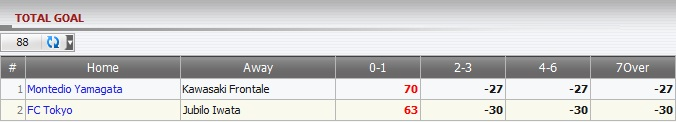

Total Goal
Definition:
Show master’s win/loss based on position taking for tickets which have bet type: Total Goal. This report is separated by each match.

figure 1.1
- In figure above:
- 1st bet: member placed a bet on match Montedio Yamagata -vs- Kawasaki Frontale, stake = 90, odds = 3.6, Master PT = 30%, member choice: 0-1 as final score. From these info, we can calculate master win/loss as below:
If Score: 0-1 --> master will lose = (odds - 1) * stake * Master PT = (3.6 - 1)*90*30% = 70.
If Score: 2-3, 4-6, 7Over --> master will win = -stake * Master PT = -90*30% = -27.
-
2nd bet: member placed a bet on match FC Tokyo -vs- Jubilo Iwata, stake = 100, odds = 3.1, Master PT = 30%, member choice: 0-1 as final score. From these info, we can calculate master win/loss as below:
If Score: 0-1 --> master will lose = (odds - 1) * stake * Master PT = (3.1 - 1)*100*30% = 63.
If Score: 2-3, 4-6, 7Over --> master will win = -stake * Master PT = -100*30% = -30.